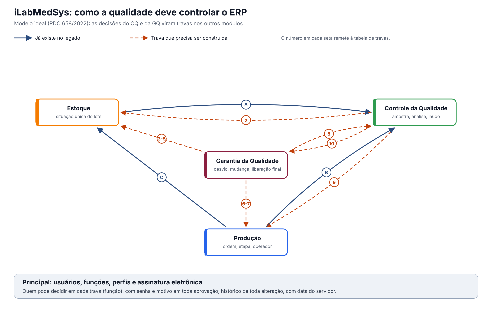

O ideal. Modelo ideal do iLabMedSys, em conformidade com a RDC 658/2022 e o Guia 33/2020. Não descreve o código do legado: usa o que foi levantado nele (CQ, GQ, Estoque e Principal) só para mostrar a distância entre o que existe e o que a norma pede. É a base dos requisitos da nova versão. Versão 0.1, de 09/10/2026, para validação com a Garantia da Qualidade.
A ideia central
No legado, o Controle da Qualidade e a Garantia da Qualidade registram, mas não controlam: o laudo não chega sozinho ao Estoque, e nenhuma decisão da GQ impede que um lote seja usado ou vendido, que um operador sem treinamento trabalhe ou que um produto sem registro válido seja fabricado (transversal/03-diagnostico-conformidade.md, causa 3).
No modelo ideal, as decisões da qualidade viram travas. Todo lote tem uma única situação, guardada num só lugar e respeitada por todos os módulos. Só o CQ e a GQ mudam essa situação, sempre por uma pessoa com a função certa, com assinatura eletrônica e histórico.

Como ler: as setas azuis já existem no legado (A: o Estoque pede a análise ao CQ; B: a Produção pede análises em processo; C: a Produção envia o produto acabado ao Estoque). As setas vermelhas tracejadas são as travas que precisam ser construídas; o número remete à tabela da seção 2. A trava 1 (situação única do lote) fica no Estoque; a 11 (reclamação e recolhimento) usa o mesmo caminho das travas 3 a 5.
1. A situação única do lote
| Situação | Quem coloca | Quando | Pode usar na produção? | Pode vender? |
|---|---|---|---|---|
| Quarentena | Sistema | Na entrada (recebimento, produto acabado, devolução) | Não | Não |
| Em análise | Sistema | Quando o CQ registra a amostragem | Não | Não |
| Aprovado pelo CQ | Chefe do CQ, com assinatura | Laudo aprovado e emitido | Sim (materiais) | Não (produto acabado ainda depende da trava 4) |
| Liberado para venda | Pessoa Delegada, com assinatura | Revisão do lote concluída, sem desvio aberto | — | Sim |
| Reprovado | Chefe do CQ, com assinatura | Laudo reprovado e emitido | Não | Não |
| Retido | GQ (desvio, reclamação, recolhimento) ou CQ (resultado fora de especificação em investigação) | Ao abrir o desvio, a reclamação, o recolhimento ou a investigação | Não | Não |
| Vencido ou reanálise vencida | Sistema, pela data | No dia do vencimento ou da reanálise | Não | Não |
| Recolhido | GQ | Recolhimento aprovado | — | Não |
Regras da situação: - Só o sistema, o CQ e a GQ mudam a situação; o Estoque, a Produção e o Comercial só leem. - Retido vence tudo: um lote retido não sai dessa situação até a GQ encerrar o desvio, a reclamação ou a investigação, com decisão registrada. - Toda mudança de situação fica no histórico, com quem, quando e por quê.
No legado hoje: a situação fica no Estoque, mas o CQ não a muda sozinho (alguém atualiza na tela do Estoque); as travas de quarentena e de reanálise vencida estão desligadas no código; lote vencido entra sem aviso; não existem as situações "Liberado para venda", "Retido" nem "Recolhido" (3.estoque/entregaveis/fonte/regras-de-negocio.md; transversal/04-mapa-de-integracoes.md).
2. As travas
| # | Trava | Referência | Quem decide | Como deve funcionar | No legado hoje |
|---|---|---|---|---|---|
| 1 | Situação única do lote, respeitada por todos | Arts. 157 e 189 | Sistema, CQ e GQ | Seção 1. Estoque, Produção e Comercial consultam a situação antes de movimentar, usar ou vender | Situação só no Estoque; travas desligadas |
| 2 | O laudo do CQ muda a situação na hora | Art. 189 | Chefe do CQ | Ao emitir o laudo (aprovado ou reprovado), a situação muda no mesmo instante; ninguém precisa "atualizar" | O Estoque busca o resultado quando alguém abre a análise |
| 3 | Desvio retém o lote | Art. 8º, IX | GQ | Ao abrir um desvio citando um lote (de material, de produto ou de outro produto afetado), o lote fica Retido até a decisão da GQ | Não existe: o lote do desvio é só texto |
| 4 | Liberação para venda pela Pessoa Delegada | Art. 8º, XV | Pessoa Delegada | O produto acabado só pode ser vendido depois de a Pessoa Delegada certificar o lote, conferindo o laudo, o registro do lote e a ausência de desvios abertos | Não existe: a aprovação do laudo faz as vezes, sem conferir a função |
| 5 | Só fornecedor qualificado no recebimento | Art. 8º, VI | GQ (qualificação) | Um único cadastro de fornecedor qualificado, por material; o recebimento de fornecedor não qualificado é recusado ou exige decisão registrada da GQ | Três versões (Estoque, CQ e GQ), nenhuma consultada |
| 6 | Só pessoa treinada executa a etapa | Art. 39 | GQ (treinamento) | A Produção confere, antes de cada etapa, se o operador tem o treinamento válido no procedimento daquela etapa | Treinamento vencido não impede nada |
| 7 | Só produto com registro válido é fabricado | Art. 8º, XV | GQ (assuntos regulatórios) | A ordem de produção só abre com o registro do produto deferido e dentro da validade | A situação do registro não sai da GQ |
| 8 | Mudança aprovada antes de implementar, com versão | Art. 8º, XII e XIII | GQ | A mudança aprovada gera nova versão do documento (Controle de Documentos) e da especificação (CQ); análises e ordens passam a usar a nova versão; a eficácia é verificada depois | A mudança não liga a nada; a especificação não tem versão |
| 9 | Água e sala reprovadas bloqueiam o uso | Art. 8º, VIII | CQ | O ponto de água ou a sala com laudo reprovado (ou com coleta atrasada) fica bloqueado na Produção até novo laudo aprovado | A Produção decide pelos próprios registros, à mão |
| 10 | Resultado fora de especificação abre investigação | Art. 245 | CQ (investigação de laboratório); GQ (desvio) | O resultado fora de especificação retém o lote e abre a investigação; confirmado, vira desvio na GQ | Só exige uma observação |
| 11 | Reclamação e recolhimento retêm e recolhem lotes | Arts. 319 e 343 | GQ | A reclamação é registrada e investigada; os lotes envolvidos ficam retidos; o recolhimento marca os lotes como recolhidos e rastreia onde estão (Comercial, Rastreabilidade) | Não existe |
3. Quem decide
| Papel | Decide | Não pode |
|---|---|---|
| Analista do CQ | Registra os resultados | Aprovar o laudo da análise que fez |
| Chefe do CQ | Aprova ou reprova o laudo; conclui a investigação de laboratório | Liberar o produto para venda |
| Pessoa Delegada | Libera o lote para venda; decide sobre lote retido | Ser a mesma pessoa que aprovou o laudo daquele lote, salvo decisão registrada da empresa (a validar) |
| Garantia da Qualidade | Abre e encerra desvios, reclamações, recolhimentos e mudanças; qualifica fornecedores; mantém treinamentos e registros | Aprovar o próprio desvio ou a própria mudança |
| Estoque, Produção, Comercial | Executam | Mudar a situação de um lote |
Toda decisão acima pede assinatura eletrônica (senha e motivo) e grava quem, quando e por quê.
4. Requisitos que valem para todas as travas
| # | Requisito | Referência | No legado hoje |
|---|---|---|---|
| 12 | Toda alteração com histórico: valor anterior, novo, quem, quando e motivo | Art. 125 | Histórico só em parte das gravações, nos três módulos |
| 13 | Registro feito no momento da ação, com data e hora do servidor | Art. 124 | Várias datas vêm da tela (GQ, CQ) |
| 14 | Assinatura eletrônica nas decisões | Guia 33, 9.3.2.3 | Nenhuma aprovação pede senha |
| 15 | Acesso por função, conferido no servidor em toda gravação | Guia 33, 9.3.2.3 e 9.7.7.1.2 | Conferido só na tela, ou só a consulta |
| 16 | Integrações confiáveis: a falha avisa e não deixa a operação pela metade | Guia 33, 9.3.2.3 | Telas que mostram sucesso sem gravar; integrações que escondem erros |
5. Os documentos do modelo ideal
- Este documento: o que vale entre os módulos.
- O Controle da Qualidade ideal (
4.controle_qualidade/ideal/cq-ideal.md): 16 funções a manter, corrigir ou construir, o caminho da análise, as integrações e os papéis. - A Garantia da Qualidade ideal (
5.garantia_qualidade/ideal/gq-ideal.md): 15 funções, o caminho do evento à decisão sobre o lote, as integrações e os papéis. - A seguir: os fluxos ideais mais críticos, com fluxograma (liberação do lote, desvio com retenção, resultado fora de especificação).
Pontos para validar com a Garantia da Qualidade: 1. Quem é a Pessoa Delegada na empresa, e se ela pode ser a mesma pessoa que chefia o CQ. 2. Se a liberação para venda deve exigir também a revisão do registro de lote da Produção (OPE). 3. Se o lote "Aprovado pelo CQ" pode ser usado na produção antes da liberação final (para materiais, a norma permite; para produto acabado, não se vende).
O que a ANVISA pede: textos citados
Texto literal das normas citadas em cada tema, extraído dos arquivos da pasta Documentação/ (RDC nº 658/2022 em português e Guia nº 33/2020) por homologacao/ferramentas/citar_normas_diagnostico.py. "(...)" marca trechos omitidos. No portal, clique na referência de cada tema para ver o texto.
Tema 1 · Situação única do lote, respeitada por todos
RDC 658/2022, art. 157
Art. 157. Os materiais recebidos e os produtos acabados devem ser fisicamente ou administrativamente colocados em quarentena imediatamente após o recebimento ou processamento, até que sejam liberados para uso ou distribuição.
RDC 658/2022, art. 189
Art. 189. Somente matérias-primas que tiverem sido liberadas pelo departamento de Controle de Qualidade e que estiverem dentro de sua data de reteste devem ser utilizadas.
Tema 2 · O laudo do CQ muda a situação na hora
RDC 658/2022, art. 189
Art. 189. Somente matérias-primas que tiverem sido liberadas pelo departamento de Controle de Qualidade e que estiverem dentro de sua data de reteste devem ser utilizadas.
Tema 3 · Desvio retém o lote
RDC 658/2022, art. 8º
Art. 8º Um Sistema da Qualidade Farmacêutica adequado à fabricação de medicamentos deve garantir que:
(...)
IX - os resultados do monitoramento de produtos e processos sejam levados em consideração na liberação do lote, na investigação de desvios e com o objetivo de tomar ações preventivas para evitar desvios potenciais que possam ocorrer no futuro;
(...)
Tema 4 · Liberação para venda pela Pessoa Delegada
RDC 658/2022, art. 8º
Art. 8º Um Sistema da Qualidade Farmacêutica adequado à fabricação de medicamentos deve garantir que:
(...)
XV - os medicamentos não sejam comercializados ou distribuídos antes da Pessoa Delegada pelo Sistema de Gestão da Qualidade Farmacêutica ter certificado que cada lote do produto foi produzido e controlado de acordo com os requerimentos de registro e quaisquer outras normas relevantes à produção, ao controle e à liberação de medicamentos;
(...)
Tema 5 · Só fornecedor qualificado no recebimento
RDC 658/2022, art. 8º
Art. 8º Um Sistema da Qualidade Farmacêutica adequado à fabricação de medicamentos deve garantir que:
(...)
VI - sejam tomadas providências para a fabricação, fornecimento e uso das matérias-primas e materiais de embalagem corretos, a seleção e monitoramento dos fornecedores e verificação da conformidade de cada recebimento com o fornecedor aprovado;
(...)
Tema 6 · Só pessoa treinada executa a etapa
RDC 658/2022, art. 39
Art. 39. O fabricante deve fornecer treinamento para todo o pessoal cujas funções sejam exercidas nas áreas de produção e armazenamento ou laboratórios de controle (incluindo o pessoal técnico, de manutenção e limpeza) e para outras pessoas cujas atividades possam afetar a qualidade do
produto.
Tema 7 · Só produto com registro válido é fabricado
RDC 658/2022, art. 8º
Art. 8º Um Sistema da Qualidade Farmacêutica adequado à fabricação de medicamentos deve garantir que:
(...)
XV - os medicamentos não sejam comercializados ou distribuídos antes da Pessoa Delegada pelo Sistema de Gestão da Qualidade Farmacêutica ter certificado que cada lote do produto foi produzido e controlado de acordo com os requerimentos de registro e quaisquer outras normas relevantes à produção, ao controle e à liberação de medicamentos;
(...)
Tema 8 · Mudança aprovada antes de implementar, com versão
RDC 658/2022, art. 8º
Art. 8º Um Sistema da Qualidade Farmacêutica adequado à fabricação de medicamentos deve garantir que:
(...)
XII - estejam implementados procedimentos para a avaliação prospectiva de mudanças planejadas e sua aprovação antes da implementação, levando-se em consideração as notificações e aprovações regulatórias, quando necessário;
XIII - após a implementação de qualquer mudança, uma avaliação seja realizada para confirmar que os objetivos de qualidade foram alcançados e que não houve impacto prejudicial não intencional na qualidade do produto;
(...)
Tema 9 · Água e sala reprovadas bloqueiam o uso
RDC 658/2022, art. 8º
Art. 8º Um Sistema da Qualidade Farmacêutica adequado à fabricação de medicamentos deve garantir que:
(...)
VIII - um estado de controle seja estabelecido e mantido por meio do desenvolvimento e uso de sistemas eficazes de monitoramento e controle para o desempenho do processo e para a qualidade do produto;
(...)
Tema 10 · Resultado fora de especificação abre investigação
RDC 658/2022, art. 245
Art. 245. Alguns tipos de dados, tais como resultados de testes, rendimentos, controles ambientais, devem ser registrados de maneira a permitir a avaliação de tendência.
Parágrafo único. Quaisquer dados fora da tendência ou da especificação devem ser abordados e sujeitos a investigação.
Tema 11 · Reclamação e recolhimento retêm e recolhem lotes
RDC 658/2022, art. 319
Art. 319. Deve haver um sistema e procedimentos apropriados para registrar, avaliar, investigar e revisar reclamações, incluindo possíveis desvios de qualidade; e, se necessário, para recolhimento dos medicamentos destinados a uso humano, incluindo os experimentais, de forma efetiva e imediata, da rede de distribuição.
RDC 658/2022, art. 343
Art. 343. Devem existir procedimentos escritos, que sejam regularmente revistos e atualizados, para a determinação das atividades de recolhimento e de outras ações de mitigação de riscos.
Tema 12 · Toda alteração com histórico: valor anterior, novo, quem, quando e motivo
RDC 658/2022, art. 125
Art. 125. Toda a alteração feita no registro de um documento deve ser assinada e datada, devendo permitir a leitura da informação original.
Parágrafo único. Quando apropriado, o motivo da alteração deve ser registrado.
Tema 13 · Registro feito no momento da ação, com data e hora do servidor
RDC 658/2022, art. 124
Art. 124. Os registros devem ser realizados ou completados sempre que uma ação for realizada e de modo a permitir que todas as atividades significativas relativas à fabricação de medicamentos sejam rastreáveis.
Tema 14 · Assinatura eletrônica nas decisões
Guia nº 33/2020, item 9.3.2.3 (Requisitos Operacionais)
Funções – são os requisitos funcionais que habilitam o sistema a executar o processo de negócio que está sendo automatizado, tais como: - (...) - Utilização de assinaturas eletrônicas; - (...)
Tema 15 · Acesso por função, conferido no servidor em toda gravação
Guia nº 33/2020, item 9.3.2.3 (Requisitos Operacionais)
Funções – são os requisitos funcionais que habilitam o sistema a executar o processo de negócio que está sendo automatizado, tais como: - (...) - Segurança incluindo controle de acesso; - (...)
Interfaces – devem ser definidas (se aplicável), abrangendo os seguintes pontos: - (...) - Interface(s) com o usuário – definidas em termos de níveis de acesso (operador, administrador, gerente do sistema) ou funções quando apropriado; - (...)
Guia nº 33/2020, item 9.7.7.1.2 (Testes de Operações de Hardware/Software (OQ))
Acesso ao sistema e recursos de sistema;
Tema 16 · Integrações confiáveis: a falha avisa e não deixa a operação pela metade
Guia nº 33/2020, item 9.3.2.3 (Requisitos Operacionais)
Dados – requisitos relacionados ao manuseio de dados, considerando-se o seu impacto na segurança do paciente, na qualidade do produto e na integridade dos dados, abrangendo os seguintes pontos: - Definição dos registros eletrônicos; - Definição dos tipos de dados, incluindo a identificação das características, formatação, parâmetros críticos, intervalo e formato de datas válidos, limites e exatidão e assim por diante; - Onde e como os dados serão gravados (ex.: bancos de dados relacionais, arquivos criptografados etc.) - Campos necessários; - Migração de dados (importação e exportação); - Entrada de dados e subsequente edição; - Backup e recuperação; - Requisitos para arquivamento; - Segurança dos dados e integridade.
Interfaces – devem ser definidas (se aplicável), abrangendo os seguintes pontos: - Interface(s) com o usuário – definidas em termos de níveis de acesso (operador, administrador, gerente do sistema) ou funções quando apropriado; - Interface(s) com outros sistemas; - Interface(s) com equipamentos, tais como sensores ou atuadores. Isto pode incluir listas de I/O (entrada e saída) para sistemas utilizados para controle de processos; - Forma de entrada e saída de dados pelos usuários (ex.: teclado, leitor de código de barras, impressoras etc.).